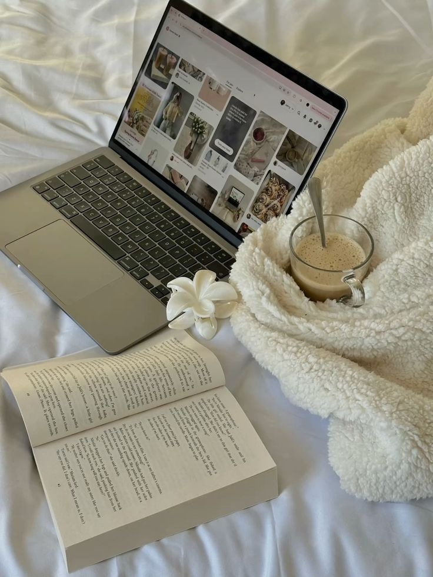
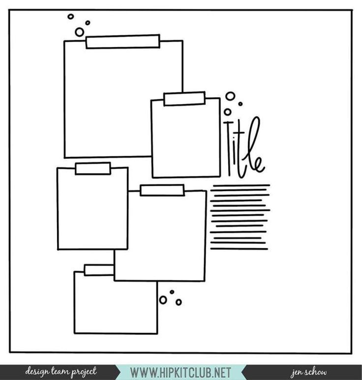

Hello! I'm a passionate designer and curious explorer of the digital world.
I turn ideas into beautiful and responsive experiences with a touch of magic ✨
I'm deeply interested in both design and tech — from creating visually engaging UIs to understanding how systems work. I love learning new tools, solving problems creatively, and continuously exploring innovative ways to build delightful digital experiences.

Chapter 2: Skills
From sketching ideas on paper to bringing them to life on screen, my journey blends creativity with technology.
I started with core languages like Java and Python, and gradually ventured into the world of Web Development — building responsive layouts with HTML, CSS, Bootstrap, JavaScript and frameworks like Angular.
...
My passion for aesthetics led me into the field of UI/UX Design, where I now use tools like Figma to craft intuitive and visually appealing user experiences. I love experimenting with interactions, animations, and layout flows that tell a story.
To stay future-ready, I’ve begun exploring the fascinating world of Artificial Intelligence and Machine Learning, developing a foundational understanding of data science and smart systems.
Beyond tech, I believe soft skills make a real difference — and I'm proud of my confidence, teamwork, adaptability, leadership, communication and an ever-curious mind that thrives on continuous learning.
Whether it’s solving a logic puzzle, designing a wireframe, or leading a team presentation — I give it my all with creativity, empathy, and a touch of magic ✨

Chapter 3: Projects
Here are some of my proud creations. Click to explore them live!